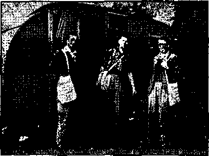
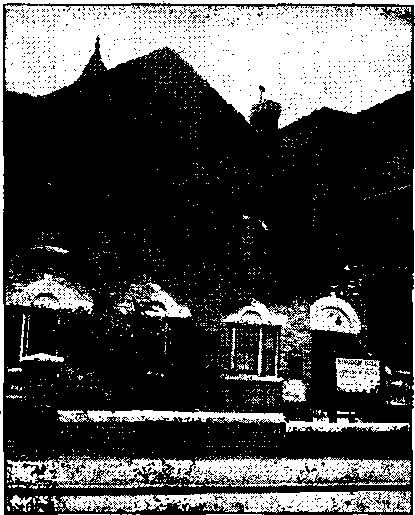
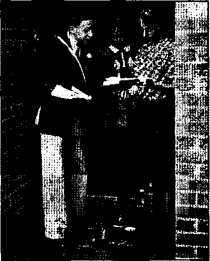
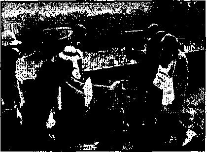

Testimony Against Them (Part 1)
“By the Bonnie Banks of Loch Lomond”
From Sherbrooke, Quebec, Daily liftcord
Counsel by J. F. Rutherford
British Comment
Published every other Wednesday by
WATCHTOWER BIBLE AND TRACT SOCIETY, INC.
117 Adams St., Brooklyn, N. Y., U. S. A.
Editor Clayton J. Woodworth
Business Manager Nathan H. Knorr
Five Cents a Copy
51 a year In the United States
51.25 to Canada and all other countries
NOTICE TO SUBSCRIBERS
Remittances: For your own safety, remit by postal or express money order. When coin or currency is lost in the ordinary mails, there is no redress. Remittances from countries other than those named below may be made to the Brooklyn office, but only by International postal money order.
Receipt of a new or renewal subscription will be acknowledged only when requested. Notice of Expiration is sent with the journal one month before subscription expires. Please renew promptly to avoid loss of copies. Send change of address direct to us rather than to the post office. Your request should reach us at least two weeks before the date of issue with which It Is to take effect. Send your old as well^is the new address. Copies wilt not be forwarded by the post office to your new address unless extra postage is provided by you.
Published also In Afrikaans, Bohemian, Danish, Dutch, Finnish, Frencn, German, Greek, Hungarian. Japanese, Norwegian. Polish, Portuguese, Spanish, Swedish, Ukrainian; also special Australian edition in English.
OFFICES FOR OTHER COUNTRIES
England 34 Craven Terrace, London, W. 2
Canada 40 Irwin Avenue, Toronto 5, Ontario
Australia 7 Beresford Road, Strathfleld, N.S.W. South Africa 623 Boston House, Cape Town
Entered as second-class matter at Brooklyn, N. Y., under the Act of March 3, 1879.
Canada as an Empire Center
♦ The United States is slowly awakening to the fact that Canada is something more than a land “half British, half American and yet one-third French, lighted by the aurora borealis and the midnight sun, and populated chiefly by the Indians, the Koyal Mounted Police and the Dionne quintuplets". Only Russia and China are larger than Canada. She has two transcontinental railways, and a water route halfway across the continent. Tt is no farther from Nova Scotia to South Africa than it is from England to South Africa, and it is only half as far from British Columbia to Australia as it is from kingland to Australia. Now that European royalty are headed this way, it is high time that Americans awoke to learn something about Canada.
British Columbia and Marquesas
♦ A Norwegian scientist and traveler back in British Columbia from a stay in the Marquesas Islands, more than a thousand miles southeast of the Hawaiian Islands, says that he found carvings there identical with carvings in the Bella Coola valley, British Columbia. This makes him think that at least some of the natives of Polynesia came from the mainland of Asia around through Alaska, as did the American Indians. A further evidence is that the first discoverers of the Hawaiian Islands found canoes there sixty feet long made of American pine.
Labor Office Moves to Montreal
♦ As shown on the last page of this issue, the League of Nations is now dead. The International Labor Office, formerly located at the League of Nations building in Geneva, has been moved to McGill University, Montreal, Canada. Switzerland is now isolated in the heart of a warring continent, and is in grave danger of seizure and division at any time.
“And in His name shall the nations hope.”—Matthew 12:21, A. R.V. Volume XXII Brooklyn, N. Y., Wednesday, January 8, 1941 Number 556
Testimony Against Them (/« Three Parts—p&rt d
TN THESE evil days when the wicked -t ‘flourish as the grass’, the words of Jesus, directed to the righteous, are of great comfort in their affliction: “But take heed to yourselves: for they shall deliver you up to councils; and in the synagogues ye shall be beaten; and ye shall be brought before rulers anti kings for my sake, for a testimony against them.’’ (Mark 13:9) In ancient Egypt, Jehovah foretold II is purpose to have a witness made to His name. (Exodus 9:16) Jehovah’s witnesses are elsewhere referred to as a “people for his name”. (Acts 15:14) There is no other object for Jehovah’s witnesses now to be on earth; and it follows, and is fully supported by the Scriptures, that the sole reason that the "beatings” and court trials are permitted to he indicted upon them is to give publicity to the fact that one body of men is wholly for Jehovah. While trial judges, the American Legion and the Hierarchy think that their assaults and court sentences will be successful in wiping the Lord's name from the earth, these vicious efforts are accomplishing just the opposite. Such persecutions furnish the occasion for the Lord’s name to be brought prominently before the people. This is one of the Lord’s maneuvers to build up evidence as a “testimony against them”.
The witness work of exposure was also pictured by the twelve stones which Joshua took out of the Jordan river after the Israelites, typical of Jehovah’s witnesses, had passed over dry-shod. Both the stones placed in the river (whose raging waters could not move this mono
JANUARY 8, 1941 ment as they flooded back) and the stones carried from the river bottom and placed at Gilgal, pictured the witness work. “There were then two witnesses to Jehovah’s miracle in delivering the Israelites across the Jordan: one pile of stones at Gilgal and one in the very middle of the river-bed. . . . Jehovah’s witnesses not only came out of the persecution which was heaped upon them by the angry’ religious waters still alive and still going on in 1931 and thereafter, but brought out with them ‘twelve stones’, that is to say, the records made for them and against the enemy in the courts and in the legislative bodies, and in the public newspapers, which records shall stand for ever against the enemies of God and his kingdom. (Mark 13:9) The Lord has maneuvered the enemy so that they have made criminal records against his faithful witnesses, and which records stand as a monument against the enemy.”— Joshua fourth chapter, and Watchtoiver magazine, March 1, 1939.
Today that pile of evidence is increasing and is very nearly, completed. By the Lord’s command, the witnesses of The Theocracy w ill shortly rest the case, and Jehovah’s Executioner will execute the sentence of death. Already there is no hope for the hypocritical enemies of God. The facts here published are not for the benefit of them. But let those who are honest and who love fairness and an equal opportunity for all take stock of the situation today.
This is 1940-1941. During the years 1918 and 1919 the Lord’s witnesses were
3 stopped under pretext of the war. The war hysteria then served as a blind for the foul work of the Roman Catholic Hierarchy and other religionists. Again the American people are being whipped into a lather for war. A. rapacious and bloody dictator acting for the pope has trampled over the dead and dying bodies of the Nazi-slain. Again Americans, in panic over the threat to their lives and institutions, have been induced to attack Jehovah’s witnesses, while the real "fifth columnists” laugh behind the scenes at the gullibility of Americans. None gives protection to Jehovah's witnesses and they are left to the merciless .Papal wolves. And yet. Jehovah’s witnesses have already rendered a great service to all lovers of freedom.
Had not the duplicity of the Roman Catholic Hierarchy been exposed during the past five years, every, nation now would be under the absolute dominating ■ control of that instrument of Satan and there would be no liberty whatsoever enjoyed. Thanks be unto Jehovah God and. His beloved Son, Christ Jesus, for giving the people who love righteousness an understanding of the wickedness and iniquity of the Hierarchy at the present time. Jehovah foreknew all this wickedness, of course, from the beginning. He caused His prophecies to foretell it and in the last few years He has revealed, through Christ Jesus, to the time followers of Christ the meaning of these prophecies and made it clear that the Roman Catholic Hierarchy, together with the Nazi-Fascists, constitutes 'The abomination that maketh desolate”, concerning which the prophet Daniel wrote, and also of which the .Lord Jesus sjjoke. Jehovah has used His witnesses on earth to go about, amongst the people and inform them. Jehovah's witnesses are those individuals who are the true followers of Christ Jesus who shun religion as a deadly enemy and who devote themselves wholly to God’s kingdom under Christ. They art; of no denomination, no sect, no cult, but are individuals who love righteousness and hate iniquity and who have devoted themselves entirely to the service of Almighty God and His King. For this reason, as Jesus stated, they are hated of all nations for the sake of the name of Jehovah and Christ Jesus. The fact that Jehovah has caused His witnesses to proclaim these great truths in the past few years is proof conclusive that the day is at hand when He Will completely clean out every vestige of the Devil’s organization, chief of which on earth is the Roman Catholic Hierarchy.
Pacelli, the present head of the Hierarchy, like a two-faced Janus, now turns his hypocritical smile upon the young people of the world and says: “To replace the Bible and its morals in esteem and honor.” (New York Herald Trilmne, October 7, 1940) No other institution that ever existed has kept the Bible out of the hands of the people as has the Hierarchy. No other organization that ever existed is so reprehensible or responsible for the darkness that now enshrouds the people concerning the Bible and morals as the most immoral crowd that has ever aillicted the earth, the Roman Catholic Hierarchy. For centuries the Hierarchy burned the Bible, and persecuted to death cveA? man who attempted to translate the Bible and publish it in various languages, and now with a hypocritical, devilish smile, the pope says, “Det’s put the Bible back into the hands of the people.”
There is not the slightest doubt that had not Jehovah’s witnesses cried nut in warning against the Hierarchy’s conspiracy to gain world dominion by alliance with the totalitarian rfalers, the Hierarchy would have achieved their purpose virtually without opposition. As it is, nearly every news agency on earth is doing all possible to protect the Romanists from blame, and hide their complicity wuth the murderers of Ku-rope. Thus it appears that Jehovah’s witnesses have, by the grace of the Lord, waged a single-handed combat of exposure. "Without this no nation on earth
would have had an inklingof the Hierarchy’s intentions. And for this they deserve no personal credit, as they were merely obeying the commands of the Most High; but- as His servants it behooves all to treat them with respect. “Since thou wast precious in my sight, thou hast been honourable, and I have loved thee: therefore will I give men for thee, and people for thy life. ... Ye are my witnesses, saitlTthe Lord, and my servant whom I have chosen.”—Isaiah 43:4,10.
It thus appears that it is because God’s name is involved that Jehovah’s witnesses are commanded to expose the Roman Catholic Hierarchy as “Christendom’s” leading perverters of the truth. It must be borne in mind that this wicked organization claims to serve the Lord, and the pope bears the title “Vicar of Christ”. Many have been deceived by this claim. If it were left unchallenged the people would have difficulty in ever learning of God’s provision for salvation of the obedient through His kingdom, Tun Theocracy. These facts should for ever silence the charges that the witnesses carry on a campaign of hate. Jehovah’s witnesses will now, and until this “strange work” is completed, continue to expose the Roman Catholic organization as a falsifier and blasphemer.
To substantiate the Scriptural prophecies foretelling the Hierarchy’s line of action at the end of the world, where w-e now stand, plenty of factual evidence is available. Priests and prelates often give away the schemes of the pontiff. When this occurs and charges are hurled at the Vatican, apologists argue that there is no Papal guilt because the pope is not responsible for all the acts of dominies, bishops or cardinals, and that such words or acts are not necessarily his. This disclaimer is a lie. It is also contrary to every principle of law.
Let us consider these points in order. Those who think the pope does not know Avhat is going on in his vast religious and political dominion are misinformed. The JANUARY 8, 1941
Vatican has the best-informed foreign office in the world. Let a priest start preaching the Bible or denying “purgatory”, and stern measures would be instant. Authentic statements of ex-priests wTho have broken with Rome prove this without exception. Denunciation is not the only Papal weapon. Merciless persecution is resorted to, and, in Catholic countries, starvation or murder often relieves Rome of such a “heretic”. The numerous biographies of those who have escaped add pitiful testimony to the horrors of Papal hatg. Even America has followed suit to the conduct of the Catholic totalitarians. In utter violation of the laws of the land, Catholic mobs are swooping down on Christians who dared to criticize the doctrines of Rome.
■ This villainous organization takes the inoffensive and helpless role only when it suits her convenience to do so. Otherwise she is the roaring leopard, spotted with the blood of centuries of crime. She claims she cannot stop the anti-Semitism of Coughlin, but when Spain offended her she financed an army to “defend the faith”. In America Pius XII is represented as striving for peace, and heart-torn at the struggle of his Catholic children; while in Europe he is the in-spirer of the armies of Italy and Germany. It is a commentary upon the folly of adhering to religion to note that Catholic devotees of England still worship the pope even though he is inciting the armies which are battering their wives and children to pieces. Religion is indeed a snare.
Disclaiming Responsibility
It-is really amazing that no responsibility is exacted of the Papacy for the actions of her agent-priests and bishops. One of the cardinal axioms of law is that a principal is liable for the acts of its agent. Is the pope ever required to answer for what is done by subordinates ■ in the Papal organization? Papal authority extends over all Catholics, including Hitler and Mussolini. The pope
has been requested several times to excommunicate both the dictators. When Cardinal Hinsley of London “was pointedly asked why the pope does not excommunicate the war-guilty dictators, both of whom, together with approximately 75 million of their followers in Germany and Italy, are Catholics, he evasively replied: ‘Nowadays excommunication i$ comparatively rare, and is inflicted only in cases in which the Church sees the possibility of obtaining satisfaction ' from the culprit for the crime committed.’ ” (The Converted Catholic, September, 1940) ,
We could perhaps assist the English cardinal by the suggestion that if the pope excommunicated Hitler and Mussolini it- might inconvenience his plans for the subjugation of England.
Presumably the pope himself never bothers to afiswer any of these questions that would embarrass the chief executive of any other organization. But he likes best those who do not even ask difficult questions. The people of Canada seem to come under this category. Even when a former German aviation flier, one of the . most skillful aces of the first World War, dons the collar of the priest again, and for many years builds air bases from the Hudson Bay region stretching away to Greenland and Iceland, the Canadians do: not even ask his superior in Vatican City, “Why?” Even with the spectacle of Canada’s contribution of Charles E. Coughlin, hollering away for Hitler just over the border in Detroit, they do not seem even to wonder if a great many other of the priestly tribe are not antiBritish. They never question the pope. That is the kind of nation he likes best.
The amazing facts about “Father” Schulte would seem to arouse the resentment of nearly any nation to the treacherous organization he represented. Perhaps the reason for this apathy lies in the dominance of the Catholic “Minister of Justice” who has already decapitated the liberties of the Canadian people. The story, although the citizens of the Dominion do not seem greatly disturbed, is one that should give American readers cause for thought.
The Toronto Globe and Mail headlines the discovery, “Find Caches of Gasoline Stored by Flying Priest.”
Ottawa, Sept. 2G (Special).—Father Paul Schulte, “the flying priest of the Arctic,” who ministered to the spiritual needs of a scattered population in the far North, also gave earnest attention to the physical requirements of Nazi Germany by eacheing thousands of gallons of aircraft petrol in secret spots of the Hudson Bay region. The one-time German war ace is believed by Ottawa officialdom to have been an agent of Nazi Germany and that,’ under the guise of a man of God, he conducted aerial surveys in Hudson Bay district and planted his stores of oil against the day when Nazi bombers might one day sweep down on the Dominion by way of Iceland and Labrador. Royal Mounted Police have unearthed these gasoline caches, amounting to thousands of gallons, a vital supply for any enemy planes that hoped to return acrqsB.the Atlantic after completing their mission of destruction here. The Eskimos and trappers of the lonely Arctic country knew Father Schulte, who is no longer in ‘Canada. He made thousands of flights in. his own plane, handling the controls with a deftness born of the days of the first Great War when he flew for Imperial Germany and fought many a combat in the $kies. If what is said about the “flying priest” is true, he combined his spiritual mission with a painstaking survey of strategic points. He also established seven short-wave radio stations which could have been of great value to an enemy force. Father Schulte made his first visit to Toronto in October, 1939. He was quoted in a newspaper interview October 13 as saying: “I am active in Canada and the United States for charity work only and not directly or indirectly for any commercial or political purpose in or outside of Canada or the United States.”
Of course, this satisfied Catholic Minister of Justice Lapointe.
The dispatch further states that the Defense and Transport Departments woke up in March, 1939, after the priest had been engaged in his missionary air consolation base establishment for three years, and kept a “close check on Father Schulte, fearing that he might be establishing a network of radio stations that might prove useful to any design that Germany might have on Canada". The article quoted immigration authorities as saying that his status in Canada was that of a visitor and that he had a more permanent status in the United States.” (He should feel at home with the priests and archbishops of the fifth column in this country. The United States houses, feeds and pays them better than almost anywhere else. Besides, the American press instantly hushes up any rumor that a priest could do wrong. If he does, he must be an impostor and while they are arguing over the matter the spy can go on about his business of betraying the country. Nice fellow, Roosevelt, too.-)
The Catholic-minded Commissioner ■ S. T. Wood of the Royal Canadian
Mounted is an excellent cover-up man. The same newspaper quotes him as saying that “he knew nothing of a report Father Schulte, /Flying Priest of the Arctic,’ had cached large stores of gasoline for possible use by Germany”.
Commissioner Wood said he knew Father Schulte had large stores of gasoline at various points in the Arctic for use in refueling his ■ planes on his trips to various Roman Catholic missions. He ■ declared these stores have not been seized by his officers. He had no report on the matter1, he added.
It appears certain that Wood is an excellent servant of the Hierarchy and . may have helped Schulte wuth his treachery. But why he should first learn about what is happening in hisz territory through a newspaper would be hard to explain in most police organizations. It seems more likely thabhe already knew all about it but had not yet received an O.K. back from the pope that he could admit it. Meanwhile Schulte got clean away. Maybe he figured not all Canadians would be so guileless in their worship of the priesthood as Wood. Our suggestion would be to look for Schulte first in
JANUARY 8, 1941
Detroit, not neglecting the Shrine of'the Little Flower; second, at the White House; third, in the munitions room of St. Patrick’s Cathedral on Fifth Avenue. We know of no places where Catholic traitors would be so welcome, or so safe.
The Olobe and Mail seems to betray an anxiety that is not shared by Commissioner Wood, however. In their issue of October 3 they headline this concern, “Why Not Tell the Public?” The authorities would allay apprehension if they made public a statement concerning the activities of “Father” Paul Schulte, “flying priest of the Arctic,” who* is alleged to. have established petrol caches and made complete aerial maps of Hudson Bay region while ostensibly engaged in missionary work in the subarctic.
We are now informed that the Canadian authorities intercepted letters from an accomplice of the former German war aee, who was making soundings in the Albany River and the James Bay district and sending the information thus obtained to the German Embassy in Washington. Did the Nazis contemplate an aerial invasion of Canada via Iceland, Greenland and Labrador? The public assumes that adequate defense preparations are being made throughout Canada and does not expect details of the plans the Defense Department has made to safeguard the country against attacks, whether in the air or on the sea/But there appears no valid reason why the people should not be informed about the improper activities of German agents who sought to undermine the nation whose guests they were. An adequate explanation of the activities of the “flying priest” and those associated with him is long overdue. What was his real mission in the Canadian North and why did he leave? An authoritative report concerning him would close the incident.
The Scriptures foretell that “darkness shall cover the earth, and gross darkpess the people” at this time. (Isaiah 60:2) It seems that a> big chunk of this darkness has fallen on the realm lying just north of the Great Lakes. The authorities there profess ignorance of the doings of the spies of the Vatican, In def-
7 erence to the pope the title "Father” before the name of. Schulte is now written in quotations to indicate that he is likely an impostor. The people of the Dominion seem to fear the Roman Catholic Hierarchy more than they do the Nazis. They must not even accidentally tread on the toes of the Papacy, which accepts this homage with scornful condescension.
[This is the same Paul Schulte, the so-called "flying priest” who accompanied the German dirigible airship “Hindenburg” on its flight from Germany May 6,. 1936, to Lakehurst, N. J., where it arrived 2$ days later. At the time this occurred, it was widely published that this was the first time mass was ever “performed”—the right word that—on an airship. No chance to break into print is ever missed by these racketeers, and the newspapers are oh so glad to act as their chambermaids, and to forget oh so cheerfully as they now do about Schulte’s pope-sanctioned “performance”.—EdA
For many years past Jehovah’s witnesses have called the attention of the Canadian people to the alliance between the Hierarchy and the Nazi dictator. Because of this the government was induced, through Catholic pressure, to suppress Jehovah’s witnesses as subversive. The Nazis’ worst enemies were thus done in by the Catholic political element. Now here comes further .proof that Roman priests stand shoulder to shoulder with Hitler. Jehovah’s witnesses have been banned and no . Watch Tower publications are permitted to cross into Canada. Commissioner Wood and his “Mounties” are zealous in the persecution and prosecution of the witnesses; and yet an agent of the Vatican practically equips Germany with a chain of air bases and radio stations, together with aerial maps and river charts, while the boasted Royal Mounted does not even confiscate them, if the commissioner’s words are true. Nor do the Canadians dream of questioning the subversive organization that Schulte works for. Probably Canada may look for a spring conversion in the Hitler manner, same technique as employed on France. The Canucks will still support a breed of priests who helped do the job. That is a good example of how religion has emasculated a once vigorous nation.
The danger to Canada is very real. Probably Schulte knows more about this northern country than any Canadian aviator. It is further pointed out that the “transatlantic hops on this Great Circle route are much shorter than the return journey which British bombers now make daily from London to Berlin”. The Globe and Mail also asks: “Were the soundings in the James Bay district preparatory to landing Nazi troops near the terminus of the Temiskaming & Northern Ontario Railway?” In the opinion of a distant observer, Wood is hardly the man to find out. This official first needs to be informed that Canada is not fighting for the pope, but against Hitler, the pope’s ally.—Elton Groves.
(To be continued)
Intolerance at.Timmins, Ontario , ♦ Some idea of the intolerance shown by the police of the priest-ridden town of Timmins, Ontario, may be gathered from the fact that four police arrested four of Jehovah’s witnesses for offering magazines to the public. The magistrate in the case happened to have some common sense and drew the attention of the four “brave” officers to the obvious fact that two persons do not constitute a parade, which was the basis on which the arrests were made. The officers, of course, were alert to do the will of the religion mongers, and ^iot to uphold the law.
Two Cents a Pound for Cod
♦ If you had to catch them and cure them you would not think you were overpaid if you received 2 cents a pound for codfish; now would you? The Canadian codfish eatch for a recent year amounted to 170,020,000 pounds. The marketed value of the same fish was $3,335,000, which figures out at about 2 cents per pound.

The Witnesses in Canada
♦ Newspapers and newspaper dispatches from Canada show that Jehovah’s witnesses there (and the same is now true in New Zealand) are having a tough time of it. The Roman Catholic Hierarchy Fifth Columnists realize that the witnesses know the truth about their infamous conspiracy, and so say to the politicians, in effect, “You must help us to get rid of these witnesses or we will use every priest and news writer in our organization to make it so hot for you that you will .have to give up the fight.”
When the clergy of the Devil have anything particularly despicable to pull off-against Jehovah’s witnesses, they always try it out first in clergy-ridden Canada. It was so in the World War of 1918, so in the radio conspiracy of 1933, and it is so ' now in their final chance to do evil.
At Hamilton, Ontario, 27 little witnesses for Jehovah were suspended from school for failure to salute the flag, and politicians were making elaborate plans to persecute as well as prosecute their parents. Great rejoicing among all Canadian religionists; shame among politicians and sorrow among real Christians.
Four days later the premier of New South Wales, Australia, announced his intention of doing the Hierarchy’s will in Sydney even as it is done in Hamilton. Meantime the attorney general of Ontario admitted that “there is some doubt as to whether in these cases a charge can properly be laid under any statute or regulation other than the Defense of Canada Regulations”. In other words, here is an admission of a conspiracy to throw Jehovah’s witnesses and their children into the furnace, on the ground that their obedience to Jehovah God’s commandment in Exodus 20:3-5 endangers the safety of the country. How7 per. fectly asinine!
At Owen Sound, Ontario, four farmers, Robert Stephens, Cecil Barfoot, Roy Barfoot and Arthur Spencer were jailed for thirty days for the same reason that Cain killed Abel. Like Abel, they were accused of being witnesses of Jehovah, i.e., real Christians. And for that reason »it was dangerous to have them pitch hay, milk eow;s, spread manure and help provide food for the mouths of religionists. The constable who arrested these men ■was A. L. Langelle. Name of priest unknown.
At London, Ontario, Hazel Ford, 20, Bertha Hopps, 18, and Joan Lambert, 20, were given three months in prison by Magistrate A. M. LeBel. Name of priest unknown. The girls were accused of being real Christians," and hence for ninety days must associate with thieves, whores and other religionists, to please the politicians and clergy.
Children in the Furnace
At Kitchener, Ontario, John, Paul and David Gakeff were placed in solitary confinement in empty classrooms for five hours at a time with instructions to -write on the blackboards, “I must sing ‘God Save the King’.” The little chaps^ (except the youngest) stuck it out and at last accounts the blackboards were still bare. They w7ant Christ as their King. At Kirkland Lake, Ontario, three more little folks were suspended from school for the same reason. And so the work of the Devil and his vicious religionists goes forward. One Kitchener lad yielded to the pressure.
At Hamilton “a 15-yearmold boy” gave such a remarkable testimony for God and His kingdom that the Toronto Globe-and Mail carried almost a column about it, but lacked the fortitude to give his name. No pope, no cardinal, no bishop, no priest and no religionist ever gave a
better testimony than this unidentified child who meekly took his stand on the ^second and sixth commandments of the Creator, which he quoted in full. To the , praise of the Eternal this boy said, “My 'King is Jehovah God and I honor no other king. I’m not against King George; I respect him, the flag and the laws of the country.” The name of the public persecutor was 0. M. Walsh. Name of priest is unknown. Two Hamilton children yielded. '
In an editorial hostile to Jehovah’s, witnesses the Hamilton Review admitted that the judicial opinions thus far had been “confusing and hardly what could be regarded as consistent”.- In other words, the religionists were in a conspiracy to pitch Jehovah’s witnesses into the furnace, but could find no law to justify their' abominable course. Even the politicians could hardly obey their demands.
“On Guard” (?) and On Guard
At Windsor, Ontario, Arthur Hopkins was arrested -and held in $2,000 bail for having in his possession leaflets of Jehovah’s witnesses. Contents of leaflets not known from the description (distorted, as always, in that paper) given in the “On Guard” Detroit Free Press. By contrast with that wretched sheet, 'the Sault Ste. Marie (Mich.) Evening News of November 16, 1940, gives a stirring editorial entitled “Is This Democracy?” protesting the arrest and conviction in the-Ontario city of the same name of Margaret J. Robinson, Edith Dunn, Earl Dunn, George Booth, Pearl Booth, Alva Booth, Russell Booth, Kathleen Ray, Clarence Ray, Harold Powley, Harvey Powley, Albert Powley, George Powley, Jr., George Powley, Sr., and Clara Powley. The persecutor in this case was W. S. Maguire; name of priest unknown. Maguire, in asking sentence, told Hie court that he had proved that the Canadian order against being a witness for Jehovah “did notin anyway change their belief". He wanted them locked up for
their beliefs. The magistrate concurred, admitting, “We cannot have anything based even upon Holy Writ,” etc., etc., and (says the Evening News)— ■ .
Americans in the main have so great a conviction on the side of Canada and of England that it is generally conceded that this nation would quickly plunge into the war with its own blood and brawn if “democracy” were to be attacked on this side of the Atlantic. Liberty must be preserved; England and Canada are on the side of liberty; therefore their fight is our fight. That is the trend of American thought today.
Which brings out into Ugly spotlight the fact that Canada, in guise of defense, has clamped an iron heel down on the religious activities of those Bible students who believe themselves to be followers of Him who declared that His followers should come out from among the world and its warring, Fifteen residents of the Canadian Sault -men and women—-were convicted this week of violating Canada’s defense regulations by having in their possession literature of their organization, and by meeting to study their interpretations of Bible prophecies' •
Hitler could do no worse. He burns literature of the various Christian creeds in Germany and in the conquered territories, and imprisons those who dare to think that militarism and might are not in accordance with the Gospel of Christ.
Paul was imprisoned and throughout the past 2,000 years myriads of men have been martyrs to the religious causes which impelled their lives.
But religious conviction has not been crushed—-and in America it is protected by the highest law of the land. The right to worship God according to the dictates of one’s .conscience is a sacred right, and must.not be crushed out even when national emergency arises.
To jail these men and women who look ujK>n themselves as witnesses for Jehovah God, will not take from them their beliefs that this time of international chaos is the foreordained work of Satan and a prelude to the Millennium which they believe is just ahead. Nor will it make better Canadians of them.
“By the Bonnie Banks of Loch Lomond” ♦ Just a note to let you know I’m O.K. I’m having a wonderful and jolly time up here. Life has been full of experiences this last week; I’ll telLyou about them. When I left home, on Monday at 7 p.m,, I got a puncture in my back wheel. At Alexandria, by good fortune, I managed to fix it in a quarter hour; so I started off again. Reaching Luss I passed the local police, and I was about four miles by Luss when the same constable passed me in his ear and told me to stop. I did so, whereupon he asked for my registration card. He wasn’t satisfied; so he proceeded to search my trailer. Finding nothing illegal in it he apologized to me. I talked with him and placed a Refugee booklet with him, and with a word of “good luck” and some praise on my trailer, the way it wTas hitched on to the bike, I went on my way. I camped on Loch Lomond side.
At 9 a.m. I got on my way again, when it started to pour. It rained all day, and I got soaked. Twenty miles farther on I camped again, feeling sick, fed up. An hour after I made camp the rain went off, so I started to cycle again. I reached JANUARY 8, 1941
Rannod moor, when two of my ball bearings in the back wheel broke. I stuck it out till I reached the south side of Loch Leven, and camped for the night.
In the morning (Wednesday) I was two miles from Kinlochleven village when the axle of my back wheel snapped in two. What a fix! I knew' of a shop in the village which was the only one to sell bicycle stuff; but I w’as disappointed that they had none and neither had any of the garages. I thought I was going to be marooned there; but no, the Lord looks after His sheep, and a wee boy overheard that I needed an axle and he got me one for nothing; another got me some ball bearings. After I got fixed I went off again praising the Lord.
I won’t tell you them all, but here is another experience I had on Thursday. I plated 21 hooks and 5 booklets and w’as going back to my tent. I -was starving at the time. On my way back I did a big white mansion that T had missed. The man of the house promptly said to me, “I’m a military officer and I’ll have to detain you.” I was surprised, but said “All right”. “The police are on your
Pioneer caravan squad, London, England
track/' he said, “for spreading propaganda which is undermining the morale of the people and we have got reports from various people that you are going to set up another government,” ami umpteen o/her sayings. 1 sniihid and explained to him our work; alder which he got my history from the day 1 left school till now. The police came and 1 didn't need to do much explaining, as they already knew me. So, after th ret1 hours’ detention, I was released.
The military officer, who was a bit of a toff with a big ('state, apologized to me and gave me a good supper and a big bag containing a stone [14 pounds.) of new potatoes and a stone of new turnips and two nice cabbages, after which T left him on good t(!rms to continue my work. By that time people in the village who were warned against me bi'nuiK1 quite nicjc. too, beraipse next day 1 placed 17 books and 7 booldets.
At one house I was invited in for tea. I hadn’t time; so I was given a nice glass of lemon. Later on I was invited into another house for tea; this time 1 accepted, and had quite? a uioe time talking to the household, who were Irish people called hinnigan. I. could go on relating others; ami these are just to show how Jehovah always looks after those who try to keep U is c o m m a n d ment s.—Arthur Leslie, Scotland.
From Sherbrooke, Quebec, Daily Record To the Kditor, Daily Record:
Dear Sir:
Will you permit me a little space in your columns to say a word in defense of the witnesses of Jehovah, or "God’s witnesses”, as the literal translation reads ?
Although a member in good standing of a religious organization. I have been curious enough to read some' of the literature which is causing the wholesale arrest and eonvictiou of these people. To my astonishment this literature consists almost wholly of quotations from the IToly Bible. True, they give their interpretation of these quotations, but a close examination of their version reveals nothing more startling than the naked truth. It hurts, but still truth, unadulterated. Xo punches pulled. But I certainly do not feel like going out and throwing them in jail for putting me wise. That would be cowardly.
Southeast London Kingdom -Hall
Why these truly Christian people should he persecuted and subjected to the humiliation of arrest while hundreds of religious orders are permitted to llourish unmolested is a deep mystery to me. Why it should happen in Quebec Province, and not in any x>f the others, also intrigues me. Tn my opinion and in the opinion of many learned men and women with whom I have discussed the subject, society is making a very, very grave mistake in hindering the work that these people have set out to do.
And a word about the witnesses themselves. What manner of people are they? In my brief contact with them, I can truly say’ that their conduct'and bearing alone should convince the most skeptical of their Christian purpose. All are of the highest moral character. Manx1 of them have sacrificed good positions and comfortable places in this worldly sphere of living to join the group. They have done so cheerfully and gladly and, from what
A Theocracy publisher’s doorstep setup in London
JANUARY 8, 1941
Vain efforts in London to make
the “Host Reverend Monsignor” see the light
1 hear, despite the vicious persecution, without regret.
In the name of common decency, why not let these feeble, voices cry in the wilderness?
Thank you.
Churchman, Montreal.
[The Becord showed real courage in printing the above in Quebec.—Ed.']
Comforting Balky Mourner,s*
♦ As I called on this man he was just about to enter his home. I asked him if he would take five minutes to hear an interesting Bible lecture, the record way. He said he did not wish to hear anything and had no money to buy anything. I told him I was not. soiling, but preaching the gospel of God's kingdom. As I talked to Him he kept edging away, but at last agreed that .1 might come in and play a record for him. After playing the ‘’Snare and Backet’' record both he and his wife showed groat interest. They said it was the truth. After reading several scriptures for them, and pointing out that the Kingdom is their only hope, they’ obtained Salvation and Govermneitt and Peace, and said they had noticed that their clergyman comes around only after threshing, when they can make a good collection.
* In a land under full control of the Hierarchy. {To be continued}
13
Uncle Sam’s Pay Roll
♦ Uncle Sam’s pay roll includes 2,400 judges, 5,000 legislative employees, 46,000 blind persons, 50,000 civil pensioners, 170,000 railroad pensioners, 285,000 Social Security pensioners, 294,000 CCC workers, 295,000 military, 320,000 Federal public works, 754,000 dependent children, 758,000 national youth administration, 859,000 military pensioners, 969,000 on administrative pay roll, 1,925,000 old-age pensioners, 2,203,000 WPA workers, and 3,468,000 farm aid payments. All together, that makes 12,403,259, and indicates government assistance to. not less than 26,000,000 persons. It appears like a big pay roll and as if there were endless opportunity for graft and mismanagement; also, that Christ Jesus is needed to straighten out and administer the whole perplexed and perplexing situation.
Government to Provide Hot Lunches
♦ At the National Conference of Catholic Charities, at Denver, Dr. Thomas Par ran, surgeon-general of the United States Public Health Service, mentioned that one of the aims of the Government is to provide hot lunches for every school boy and girl, and in that way do something worth while with the huge surplus of good food now piling up and awaiting some sensible form of distribution. It is not at all a bad idea. In bygone years pa and ma had to hustle to fill the lunch boxes, but in the days of no jobs for millions of people, how can they longer do it?
$1 for the Old Post Office
♦ The treasurer of the United States was paid $1 for the old New York city post office building erected in 1875 at a cost of $8,500,000. The old building, long an eyesore on the city-owned City Hall park, was to be removed in ninety working days. The area has been reparked.
Mortgaging the Future
♦ The New Deal has tried everything once, and twice failed to get its objective. It has gone at breakneck speed down every dead-end road and stopped only when it hit the stone wall head on. It has soared to heights beyond the clouds and leaped headfirst out of a machine going 400 miles an hour without even bothering to get a map of the terrain below, or to leave anybody to guide the plane. It has mortgaged every home up to $1,000 or more, and the only way the account will ever be squared will'be at Armageddon, where all financial operations of the New Deal will cash their checks. Does a third term necessarily imply any improvement on the terms gone before?
Timid Uncle Sam
♦ Quite likely you know something about Uncle Sani’s timidity when it comes to receiving immigrants. In the six-year period July 1, 1932, through June 30, 1938, the years of Nazi power in Germany, 4,487 more aliens left the United States permanently than were admitted for permanent residence. Moreover, the 1938 net immigration to the United States was less than four one-hundredths of one percent of the population of the country. That is to say, in each village of 2,500 inhabitants one stranger from other shores came'to make his home.
Postal Workers Well Paid
♦ There was a time when Uncle Sam’s postal workers were not so well paid; but it isn’t so any more. Out of a total of close to 300,000 postal employees there are now approximately 200,000 who are in the “$2,000 a year and up” brackets. There are now so many high-salaried government employees in Washington that the average pay 'for the 127,000 government employees there located is $2,066 a year. The average for the entire federal service is $1,871 a year.
Htrbs for the Garden ■
♦ Thyme—a delicate seasoner, with a fine perfume. It grows six inches high and is adapted for ornamental borders in any type of garden. Why not try growing and using a little thyme this year?
Borage is a pretty herb; so you will want to put it in a conspicuous place. It grows eighteen inches tall and has attractive blue flowers. Its leaves impart cucumber flavor to any salad.
Caraw'ay is grown largely for the seeds used to decorate rolls and flavor breads and pastries. It has finely cut foliage similar to dill. Its creamy, yellow flowers are borne in attractive umbels.
Basil is a popular seasoning for soup and stew. It forms attractive little shrubs two feet tall. Give them space to develop and they will grow into an attractive garden feature.
Dill has long been known as a necessary item for homemade pickles. The plants grow two and a half to three feet tall and have ornamental foliage. The young tops give an excellent flavor to fresh fish.
Sage is the best known "of all herbs for seasoning dressings. Not an attractive-looking plant; so put it in the background. It grows to three feet.
Sweet marjoram is grown for its foliage which, when dried, helps to create excellent flavorings in soups. It'may also he used in dressings, or as a garnish. Plants grow to ten inches high.
Savory of the annual variety is of pleasant, spicy taste and fragrance. Imparts a delightful flavor when boiled with green beans, for which reason the German housewife calls it Bohnenkraut. Grows twelve to eighteen inches high.
Lavender is grown, mostly for its delightfully fragrant delicate blue flowers. Although sometimes used as seasoning, its chief mission is to fill sachets for the. linen closet and ’kerchief drawer.—National Garden Bureau.
JANUARY 8, 1941
Parachutists in America
♦’ The parachutists in America are just as brave' as the murderers who jump from planes in Europe at the behest of Hitler, but their work is the saving of property and of wild life. When an observer in a forest fire tower observes a wisp of flame after a thunder shower, off goes a fast plane, drops a “smoke jumper” and his kit of axes, shovels, picks, food, water, first-aid supplies and radio. If he can handle the job alone he does so; if he needs help he radioes for it. Not only does every forest fire that is thus extinguished mean much valuable timber preserved, but there is no telling how much of wild life, and, it might be, even human life as well. A “crown fire” in the treetops can travel fifty miles an hour and outrun any living creature.
Gravel versus Hydroponics
♦ Experiments are being made at the Agricultural Station, New Hayen, Connecticut, on the growing of tomatoes in crocks of gravel, nourished by chemicals. A single plant thus grown produced fifty fruits. This method, it is claimed, is superior to the tank method of culture called “hydroponics”, because no aeration of roots is necessary and there are no disease organisms in gravel. It is necessary that there be a drainage hole in the bottom of the crock. The plant food, dissolved in water, is supplied at regular intervals.
Swastika a Sign of Cancer
♦ At the Connecticut Agricultural Ex-, periment Station the chromosomes in cancer-bearing corn have been found to rearrange themselves in the form of swastika. This fact of nature seems peculiarly interesting at this time, when it can hardly be questioned that the swastika is a sign of malignant growth in the field of political activity, a death-dealing curse and an abomination.
RELIGIONISTS that prefer totalitarian rule to democracy accuse .Jehovah’s 'witnesses of engaging in a “carfi-paign of hate”. That charge is entirely untrue. They are not engaged in a campaign of hate, but in a campaign of education, making known to the people that the long-promised “kingdom of heaven” under Christ Jesus is at hand, for which kingdom Jesus admonished the people to pray. This educational work Jehovah’s witnesses are doing in obedience to the commandment of the Most High, Almighty God. These witnesses do not hate any creatures, but, like the Lord Jesus, they hate wickedness and love righteousness, as stated at Psalm 45, verse 7. As Jesus always tells the truth, so true Christians must tell the truth.
They cannot ask permission of worldly authorities to proclaim the message of God’s kingdom, 'which kingdom shall destroy all totalitarian rule, because the supreme power rests in Jehovah hud IIe has commanded that TTis witnesses must proclaim this message, and no creature has any authority to grant a permit to do the work that God commands must be done. Jehovah’s witnesses know that they will suffer much opposition and persecution at the hands of .religionist? and others of the totalitarian monstrosity because they tell the truth, but with full confidence and rejoicing they go on doing the work which the; Lord has commanded them to do. This they do because1 they are commanded by Him to do the work, and through His Word they know exactly what 'will be the result. They know that for a time they must suffer at the hands of their persecutors, and they also know that in due time Jehovah will completely deliver them and shower upon them 11 is everlasting blessings. 1
Among the prophetic, pictures made and recorded in the Bible to foreshow the overthrow of totalitarian rule is that of Goliath the giant and the shepherd boy David and of the conflict between the two, and the result. Goliath the monstrosity bullied all the armies of David’s people and boasted of what he would do. Young David appeared upon the scene and inquired, “Who is this uneircum-cised Philistine, that he should defy the armies of the living God F’ With his shepherd’s sling and a few small stones David went forth to assault the giant and slew him. In that picture David represented the Lord Jesus Christ, while the giant pictured the dictatorial rule or great monstrosity that now appears and opposes God and His kingdom under Christ. The picture discloses that the Lord Jesus wall completely destroy the totalitarian, dictatorial, joint religiouspolitical rule at the battle of Armageddon. (Head 1- Samuel 17: 23-40.)
Another apt prophetic picture recorded in tin1 sacred Scriptures and showing the end of the totalitarian combine1 is this, to wit: The nation of Israel was a typical theocracy. The armies of the nations of Ammon, Moab and Mount Seir, all of whom practiced religion or demonism, agreed and conspired together to destroy the theocratic government of Jehovah’s covenant people at Jerusalem. Their combined forces marched against that city. Jehoshaphat was then king of Jerusalem. God commanded him to lead his people the Israelites out and march to meet the approaching enemy. As they went to meet the enemy they were not to indulge in fighting, but to sing the praises of Jehovah God. The Israelites obeyed that command, and Jehovah so maneuvered the enemy that the Ammonites and Moabites, who pictured respectively the political and the commercial element of the totalitarian monstrosity, turned upon and slew’ their religious ally, the Mount Seir-ites, who pictured particularly the Roman Catholic Hierarchy religious combine. That done, the Ammonites and the Moabites fought each other and destroyed each other. There the Israelites under Jehoshaphat pictured the people of Jehovah God now on the earth under the command of Christ Jesus. At the battle of Armageddon the Greater Jehoshaphat, namely, Christ Jesus, will completely destroy first the religious element of "Christendom” and heathendom, and then their present allies, including the enemy of the Theocratic Government of Jehovah God by Christ; and Satan will be compelled to view it alh
In another prophetic picture of this monstrosity, at Revelation chapter 17, the religious element, which is represented particularly in the Roman Catholic Hierarchy, is pictured as riding on the back of the other elements of the totalitarian government, the Hierarchy acting as a spiritual overlord. Then the Lord’s prophecy shows that the political and commercial elements will join together in the destruction of the religious Hierarchy combine. This picture of political and commercial elements turning against their religious ally of today exactly fits the above-described one at Jerusalem, when Jehoshaphat was king there.—Note Revelation 17: 16,17.
The totalitariah combine, including the Roman Catholic Hierarchy, have put fear into all the people on earth except those who fully trust in Jehovah God. Those who trust in and love and serve Him and Christ His King do not fear the conspirators that form the monstrosity. At Proverbs 29: 25 it is written : “The fear of man bringeth a snare; but whoso putteth his trust in the Lord shall be safe.” Thus Jehovah gives full assurance that the only ones who will find safety are those who have no fear of the Devil’s crowd but who put their trust wholly in Jehovah and Christ His King. It is well known that the fear of the monstrosity, and particularly of the religious JANUARY 8, 1941
element thereof, has induced men in all political offices to violate their oath to protect the people’s interest, and to act according to the dictates of the monstrosity.
Seeing this great crisis, those who really love Jehovah God and serve Him are eager to inform the people of the facts, to the end that all who have a desire for righteousness may escape from the domination of the monstrosity and flee to God’s kingdom under Christ and there find safety. God has commanded, at Zephaniah 3:1-3, that all such must gather themselves together and seek righteousness and meekness in order that they “may be hid” in the time of His wrath, and He has laid the obligation upon His witnesses to so inform the people. By His grace His faithful servants engage in His witness work, prompted entirely by an unselfish desire to do good in obedience to God’s commandment. They do harm to no one, butflo good to all as they have opportunity. As the people of good-will toward God come to understand the truth, they welcome Jehovah’s witnesses and praise the name of Jehovah God for sending such witnesses to inform them. Only the monstrosity, made up of the elements that oppose God and His Theocratic Government, hate and persecute Jehovah’s witnesses, and this they do because the kingdom of God is His instrument that will bring about the destruction of the totalitarian monstrosity. »
Religious institutions try to increase their power and influence by drawing men into their organization and insisting on “'more religion”. This they do without regard to how wicked the men are that become members of their organization. Exactly contrary to that course, Jehovah’s witnesses are not trying to build up an organization into which to draw men. Their duty is to tell the people about Jehovah and His King#and Theocratic Government, that those who desire life may flee to the Lord and find refuge and safety.
, 17
Skeezix the Noble
♦ ■ Near North Bath, Maine, the dog Duke was caught.in a fox trap and was held there in bitter winter weather live days, until he was released. Tn the meantime he was fed constantly by his dog friend Skeezix who ‘carried a part of her daily meals to the entrapped dog. Additionally, every day Skeezix went down on the ice where the fish were sorted and carried her mouth full of fish to her friend Duke. The owner of Skeezix was as noble as Skeezix herself. When his wife recognized Duke’s bark in the far distance, he got up off a sick bed, put on snowshoes and followed Skeezix to the trap where Duke was caught, and liberated him.
Stanley and Edith and Beauty
♦ On Staten Island, near WBBTi, where the truth of God’s kingdom is. daily broadcast, Stanley and Edith Stone, 11 and 8 years of age, had a dog named Beauty that must go, because the parents could not afford the $2 necessary to pay for the dog’s license. They all decided to go together. The first day they, i.e., Stanley and Edith, satisfied their hunger with one ice cream cone apiece. That night they slept in a hayloft. At two o’clock the next afternoon the police found them and took them home to a good supper and the promise yf a license for Beauty as well.
Graduates of “The Seeing Eye”
♦ There are now 400 blind mem and women who are graduates of "The Seeing Eye”, the institution at Morristown, N. J., where highly trained female German shepherd dogs become their eyes and their foster mothers. Of these graduates, 72 operate merchandise stands, 52 are, students, 80 are salesmen, 32 are workers in hand industry, 28 are home teachers, 20 are proprietors of businesses. A wonderful showing.
18 '
Died at His Master’s Door
♦ Tn August, William Cawkin, British Columbia prospector, visited a friend 700 miles away as the crow Ilies. The friend wanted Cawkin’s dog, and reluctantly the request was granted. Two months later the dog, torn and emaciated, was found frozen to death just outside Cawkin’s door. He had just strength enough to get back home, and when he found the door locked from within he gave up the fight. He was only a poor mongrel, but he was true to his master. With such an example of faithfulness in mind, how can any witness for Jehovah do less than give his all to his King?
Training Dogs at Sperenberg
♦ At Sperenberg, Germany, dogs intended for use at the front are taught to jump obstacles, walk up steps leading to the top of an artificial wall beyond which he cannot see, crawl through a dark, zigzagging passage, enter a compound studded with barbed-wire entanglements, and finally come to a place where firecrackers and other explosives are set off. Then, if he does not become frightened, he is used to find wounded soldiers, carry messages, protect military objects against seizure and to haul ammunition and provision carts.
Could You Help Loving Him?
♦ .Could you help loving the coal-black dachshund called Skippy that stood guard over his little three-year-old mistress, Tost in a Connecticut swamp, until she was found? He did not mind barking, but he would not move until rescuers came. She was asleep when found, and he was standing by her.
Why Humans Like Dogs
♦ Some of the reasons why humans like dogs are that they are unselfish, patient, grateful, friendly, forgiving and loyal, and know no guile. Good qualities, eh?
CONSOLATION
Tough Stuff
♦ After having baffled scientists for centuries, the oldest known textile fiber, ramie, seems likely to succumb to the age of mechanization. Ramie is the most durable and the strongest vegetable textile known to man. It is more than eight times as strong as cotton, six times as strong as silk, and four times as strong as flax or hemp. Less crushable than linen, it is so durable that the average man would be unable to wear out a suit made from ramie cloth. Ropes, fish lines, nets and sails of ramie will withstand up to a hundred years of the hardest wear and tear. The plant belongs to the nettle family, was known to the Pharaohs, and is now to be grown, processed, and established in New South Wales as the latest Australian industry. Long live ramie. -—Australian Consolation.
Dead and Alive
♦ A New Zealand hospital recently lost an infant:-patient under unusual circumstances. Born at a country settlement it was admitted in a weak condition. Respiration failed and heart action could not be detected. Stethoscopic examination found no slightest sign of life. Artificial .respiration was, however, undertaken and oxygen administered. Eventually the infant uttered a cry, the heart beat was again heard and breathing recommenced. Physically speaking the child was dead and out of existence for over five minutes. Would the religionists kindly say where the alleged “soul” of the child was during that time—in heaven, hell, purgatory, or just floating about in the vicinity of the hospital ?—Australian Consolation,
Wellington’s Milk Plant *
♦ Wellington, New Zealand, has one of the few municipally owned and operated milk plants in the English-speaking world. The milk is brought from forty
JANUARY 8, 1941 miles away, as the immediate neighborhood of Wellington is not productive of milk. Methods of sanitation and distribution are the latest and best and the price of milk delivered to customers is around 8c a quart on the basis of United States standard measure and monetary values, for milk with a butterfat content of almost 4.5 percent. AH overlapping of milk routes has been eliminated, together with the heavy cost of erecting, equipping and operating numerous rival enterprises.
“That Delusion Called Love”
♦ Shire councilors in the Orange district, New South Wales, are concerned about the courting season of local kookaburras and magpies. It appears that the birds make a practice of perching on the power and light reticulation lines and poles. When they rub beaks together affectionately short circuits are caused in the electrical system, with resultant black-outs in the district and scores of electrocuted birds.—Australian Consolation.
What a Mother Will Do
♦ What a mother will do for a sick child was illustrated near Mount Oxide, Queensland, Australia, where a mother carried her son, ill with appendicitis, a three-day journey to the railhead, crossing mountain ranges and swollen streams on the way. She finally got him to a hospital and a successful operation was performed in the nick of time. .
New Zealand Suspends Liberty
♦ Following the example of Canada, New Zealand passed a law granting the government complete powers over all persons and property. One after another, and rapidly, all the republics are going totalitarian. There is some hope that the ban on Kingdom literature in New Zealand may be lifted soon, however.
Gallons of Gadgets ' •
♦ In the modern fighter aeroplane the pilot is a busy man from the moment he yells “Contact”. On the big dashboard of his cockpit, and at various handy points adjacent, there are forty-three switches, indicators, controls, meters, gauges, levers, handles and knobs, expert knowl-■ edge and practical handling of which combine to keep him in the air. They range from a control grip to fire his eight synchronized machine guns to a lever to raise or lower his seat. Besides keeping tab on all these items once he leaves the ground, he still has to keep an eye skinned for the enemy, whose sole idea * is to send him back there again—to stay.
New Zealand in I1/, days
. ♦ The clipper planes between San Francisco and New Zealand are now carrying passengers and make the .journey in 4^ days, whereas it takes 17 days by the monthly steamship. The planes fly every two weeks, and there is no mention, at present, that they will have any bellyaching priests aboard making a nuisance of themselves to all except the idolaters that belong to the same crowd.
The New Allison Engine Plant
♦ At the new Allison airplane engine plant, near Indianapolis, there are no windows, the artificial lights duplicate the midday sunlight day and night, and the temperature and humidity are maintained at a standard best adapted to the needs of the workers and o,f the precision instruments in constant use in their work.
The New Helicopter
♦ The new helicopter, invented by Igor Sikorsky, has one large rotor and three smaller propellers, to stabilize the ship, and is able to take off vertically, hover motionless, and move in any direction, backward, forwmrd, right or left, as the operator desires. It can land anywhere.
Speed of the Stratoliners
♦ The new stratoliners seem to be a complete success. They travel at 4 miles a minute, are above the clouds all the way, and the passengers can look down and hugely enjoy seeing thunderstorms beneath. Superchargers keep up the air pressures in the cabins of the planes and the night passengers sleep well and do not notice the height of three miles above the earth at which the liners travel. Stratoliners are rapidly being put on all the principal cross-continent routes, in- < eluding the flights to South America.
Air Passengers Increased 69 percent
♦ In the month of January 1939 the seventeen domestic airlines of the United States carried 84,344 passengers, and in the month of January 1940 they carried 136,282 passengers, which is an increase of 69.62 percent and shows how airminded the United States has rapidly become. s '
To School by Airplane
♦ According to Australian Consolation : there are places in New Zealand where the children regularly travel to school by airplane; and this is perhaps the only place in the world where this is true. Access to many homesteads in the rugged ■South Westland district is by packhorse on ly.
Lightweight Paint
♦ Two years of investigation resulted ’ in the discovery of a laccpier one coat of which provides a satisfactory covering for an airplane. This lightweight paint is said to add five miles an hour to the speed of the plane on which it is used.
, 688 Feet Y’er Second
♦ The speed record of 468.92 miles an hour made by a Mess er schmidt, Germany, figures out.at the almost unbelievable speed of 688 feet per second.
CONSOLATION
The Last of the Kings
♦ Leopold of Belgium and Christian of Denmark are merely captives, Victor Emmanuel is used only for exhibition purposes, and King George of England is merely a symbol of the British State. Carol is gone, and he is, in a very important sense, the last .of the kings. Stalin and Hitler divided his realm between them and did not even let him sit in on the conference at which the dividing was done. The Rumanians took it hard, but they had to take it. Their country is now under complete control of Hitler and the latter’s subordinate, Mussolini. The Danube river is entirely under German control, and the Germans are reorganizing the Rumanian army. With his concubine, Magda Lupescu, Carol departed for Portugal. His estates in Rumania were confiscated. He swung from Britain to Hitler too late.
Rumanian Persecutions of Jews
♦ As fast as the Pacelli-Hitler combination takes over the various countries, just so fast follow the persecutions of the Jews. Rumania passed through the usual practice in this respect. No Jew may own farms or other rural lands. What a shame and a disgrace! That means that the 750,0(X) Jews in the country must make their living in other lines of business; and many of these lines are also closed to them, as cafes, tobacco shops, movie theaters, etc.
Robbery of Jews in Czechia
♦ The robbery of all the Jews in Czechia is proceeding with utmost thoroughness. They must surrender their landed estates on payments of 25 percent of the purchase price, with promissory notes, 5 years at 5 percent, for the balance. If the original “Christian” owners or their heirs cannot be located the “government” itself is the buyer. This is merely shameless robbery of unfortunates.
JANUARY 8, 1941
The Funeral of Imri Magyari
♦ Imri Magyari, greatest of Gypsy fiddlers, recently died at the age of 4G. He played the violin from the time he was able to hold a bow, and played so sweetly and so sadly that many persons suicided by throwing themselves into the Danube, after hearing the strains from his instrument. That sounds like demonism back of the playing. At his funeral 1,000 Gypsies, playing their violins, marched in the procession, and the Gypsy players in Budapest cafes muted their violins in mourning.
Reversing the Danube
♦ Like every other big river, or little one either, for that matter, the Danube runs dowm hill, and the great burden of its freight moves the wmy of the stream. Now the-needs of Germany call for the freight to move the other way. Germany must have oil and Rumania and Russia cannot ship it, because their railroads art1 too inadequate. And the oil cannot go up the Danube, because the powerful tugs were all British-owned and have been out of commission since the beginning of the war.
Rumania Quits the League
♦ Rumania quit the League of Nations on July 10, and since that time takes orders from Germany as to what it shall do in respect to having itself sliced up as Hitler desires. Rumania’s explanation that she never received any benefit from tin1 League of Nations is not a bad explanation. Who did?
The Coldest Winter
♦ Thi1 winter of 193‘Ll940 was the coldest in Europe in three hundred years. At Budapest fifteen thousand men were called out to clean the streets of snow, but the job was so,huge and the w’eather so cold that onlv 684 responded to the call. ’
21
What “Happened” in Flanders
♦ It is plain enough what happened in Flanders. King Leopold enticed 600,000 French soldiers to leave the Meuse at Sedan unprotected and come far north to his defense. The Germans broke through at Sedan, cut off the retreat of the French, and at the critical moment Leopold ordered his army to surrender. The error is too colossal to have merely happened. Tile thing that happened is exactly what Pacelli and Hitler wanted to happen, and was too well timed and too well planned to have been merely an accident. France was betrayed by Leopold, which is proved by the fact that he breathed never a word of his intent to either the French or the British, but went ahead with the betrayal of those he had asked to come and help him. This will probably make Leopold a ■ Knight of Saint Gregory the Great, and thus a suitable comrade to Martin T, Manton and Benedict Arnold.
Leopold III, King of the Belgians
♦ About the only friend of Leopold III, king of the Belgians, is Joseph Ernest Cardinal Van Roey, primate of Belgium, who says that Leopold’s surrender and his consequent betrayal of France and Britain was a noble act. Leopold was repudiated by his own government, by his overseas empire, and by about one-third of his subjects. For several weeks, and possibly even yet, he did not know for sure where his own chilflren were, including the crown prince.
Air Force Destroyed in a Day
♦ At the time the Germans invaded Belgium the Belgians had eighty lighting planes. These were all destroyed the first day of the invasion. Swarms of German planes flew over the entire country, every airport was bombed, runways were wrecked, hangars and planes w’ere destroyed.
Nine and One-Half Minutes
♦ After the commander of the Dutch troops had surrendered, twenty-seven dive-bombers showed what they could do to the city of Rotterdam. The result was that, to use the language of an American newspaper correspondent, a square mile in the center of one of the most peaceful cities in the world was reduced to “a shambles with almost every single building so thoroughly razed that words cannot adequately describe the appearance of the wreckage”. This work of destruction, so beastly, so inhuman, so unnecessary, was all done in nine and one-half minutes.
Fifth Column in Netherlands
♦ When 10,000 .German parachutists were dropped in The Netherlands, each was provided with a map showing the nearest fifth columnists’ homes. Some were dressed as. girls, some as priests, some as nuns, some as Dutch soldiers. In one instance a body of Nazi£ disguised with Dutch uniforms joined a. detachment of Netherlands soldiers and then opened fire on them. When a parachutist stopped at a fifth columnist’s house, if he failed to show his fifth columnist identification card the parachutist opened fire on him immediately.
Discommoded but Not Disheartened
♦ The Dutch are discommoded but not disheartened by the seizure of their country, and many aspects of life continue as usual. It is a bit awkward to have the government out of the country. Queen Wilhelmina is in Britain. She had more gumption than Leopold of Belgium. In the latter case it must be remembered that Leopold is a Catholic and therefore amenable to the idea that Adolf Hitler is his brother Catholic, and that if Adolf seizes the whole w’orld, then it is in the interest of their joint lord god the pope and his lord god of 2 Corinthians 4:4.
Louisville the Center of Safety
♦ Uncle Sani seems to have picked out Louisville, Ky., as the center of safety of the United States. It is very near the population center also. When Uncle wanted to bury his gold where Hitler could not get it even if he wanted it (which he says he does not) , he picked out a place 31 miles from Louisville, and now when he wants to build a new $25,000,000 place for making explosives wherewith to blow his enemies to smithereens he picks out another place 17 miles away. The farmers were paid big prices for their land and the big smokeless powder plant (to be operated by the Du Ponts) will be partly underground, so as not to make too big a target for the expected visiting aviators.
Big Business Wants More Religion
♦ Lambert Fairchild, chairman of the National Committee for Religious Recovery, was given free time on the air, on a coast-to-coast network, to harangue America on the subject “Can Corporations Be Religious?” In that address (May 9, 1940) Fairchild declared that business cannot get along without religion. Fairchild is a booster for Christian Front Coughlin, is a backer of Major-General George Van Horn Moseley and of the Nazis, and is a fine sample of the kind of businessmen that want more religion, so that the country can grow ever more rotten and more ready for some man on horseback to finish the job.
Dictators as Receivers
♦ James S. Kemper, president of the Chamber of • Commerce of the United States, advances the novel but not unreasonable view that a dictator is, in effect, the receiver for a central government that has gone bankrupt. That is about what happened in Germany and also in Italy.
JANUARY 8, 1941
The New Plywood Homes
♦ The new plywood homes are a success, as everybody familiar with this inexpensive and attractive building material knew they must be. In many7 cities of the west the entire home, outside and inside walls, ceilings, floors and all, are made of this new material which is so desirable. Built in panels of 4 feet by 8 feet a fine home can be made of 70 pieces of the material, and the family can move into the prefabricated house two weeks after the order is placed.
Mechanization of Farms
♦ Mechanization of farms is annually throwing tens of thousands of farmers into the ranks of those who have nothing to do and no place to lay7 their heads. Nothing can prevent farm owners from purchasing tractors, and one tractor can do the work of many men. Also, the tractor has no wife and children to support. In the last five years 2,000,000 sharecropper families in the south have been reduced to pauperdom by causes entirely beyond their control.
Black Tom Fees
♦ The Lehigh Valley Railroad was awarded $9,900,322.77 damages against the German Government for the Black Tom explosions in July, 1916. The railroad had contracted to pay one-half of this vast sum to the attorneys who fought the case for them, but Judge Albert B. Maris has now decided that they may receive only reasonable fees.
To Lose Your Home
♦ To lose your home borrow money from either the Home Owners Loan Corporation or the Metropolitan Life Insurance Company.'The insurance investigation at Washington brought out the fact that the Metropolitan is America’s biggest farmer, owning outright some 7,000 farms on which it has foreclosed,
23
Experiments with Bees
♦ Experiments with bees show that when a bee has found a source of food, as sugar water, it returns to its hive and dances with quick, tripping steps, once to the right, once to the left, very vigorously, sometimes for a full minute. This stirs to action all the bees in its immediafc vicinity; they go out, and without being-shown the location, find the food, be it north, south, east or west, or all four directions. But when the sugar water was placed 3,000 feet away, it took the bees four hours to find it. Prof, von Pritsch, University of Munich, discoverer of these facts, is convinced that bees communicate with each other by power of scent.
Strength of. Insects
♦ Insects are by far the strongest of living things. A horse can draw about five times its own weight, but a bee can draw more than 20 times its own weight with ease. A caterpillar has been known to pull 25 times its own weight, while a bluebottle fly is able to drag more than 150 times its own weight, and ants even more. A small horned beetle, weighing about two grammes, will alternately raise and lower a piece of stick 200 times as heavy as itself. In order to rival such a feat a man would have to lift a loaded truck of about 8 tons capacity. —Australian Consolation.
Mice in Beehives
♦ Bees are sensitive to cold. In the winter they cluster around the queen in a compact spherical cluster the temperature of which is never allowed to fall lower than 57 degrees. To find a warm home in the winter mice often get into hives, eat the wax and honey and make nests on the floor. The bees pay no attention to them until warm weather comes, when they promptly sting them to death and cover them with an airtight cement coffin.
“The Busy Little Bee”
♦ “How doth tin; busy little bee improve each shining hour/’ goes the poem, but it does not tell the half of it. At Orchard Park, New York, Walter Bitter gathered 300 pounds of honey and left it in his bee house preparatory to packing the next day. Before he could get there tlm next morning the bees had taken it all back into their hives, and then he had to steal it all over again. Most persistent, most useful and most courageous of insects, the bee will attack any enemy, no matter how superior in size or power.
The Rock Bee of India
♦ fl’he rock bet1 of India takes life seriously, produces lots of honey and has in rnind to keep it. Swmrnis of rock bees have been known to sting an elephant to death, and a single bee that becomes enraged at a man will pursue him for miles. The natives claim that escape is impossible even by diving in the water, as the bee will wait around until he comes up for air. Combs measure up to five feet across.
Sometimes Too Busy
♦ The busy little bee that improves each shining hour is sometimes just a little bit too busy. One of them stung an aviator recently. It upset his judgment, with the result that the plane came down improperly and he was hurt. The plane was cracked up also. Looks as if this would have to be charged up to the honey business. '
The Bee Line
♦ It is claimed that a bee will bring its nectar back to the hive from flowers a mile away, and that it does it in a line so straight that if th(i entrance to the hive is shifted one inch it will hump its head on the hive when it gets back and be quite unable to find the hole by which it should enter. Seems like a big story.
Traveling a Bit Too Fast
♦ Traveling a bit too fast, the Fascist designers of the new federal building at Fresno, California, not only worked fasces into the panels of the courtroom but had the audacity to inscribe therein the Fascist motto “Justice by law, law by order”. Judge Yankwich, of Los Angeles, ordered that the United States flag be draped over the offending emblems and motto and said sternly to the traitors who are moving too fast: “The fasces is an emblem of power and not at all coincident with the American concept of the limitation of power through law. Our ideal is justice through law. The other is the ideal of the totalitarian state where the dictator is the source of law and order. Law by order, as contained in the motto, is the antithesis of our creed.” The “unidentified architect” at Washington stays “unidentified” but has repeated this offense in many federal buildings.
Earthquakes in Imperial Valley
♦ Over a single week-end in May the Imperial Valley, garden spot ot California, suffered twenty earthquakes, in one of which eight persons died. Half of the business buildings in the city of Brawley were ruined, water and gas pipes were broken, and great cracks appeared in the huge irrigation canal that serves the valley. Upon this canal hangs the welfare of $30,000,000 worth of farm and garden crops. '
Desert Palms Survive Fire
♦ California has desert palms which some claim are at least 2,000 years old. They have no rings, and hence their age is uncertain. As the leaves die they bend down around the trunk to make a home for birds and little creatures of the desert. A fire may burn away all these dead leaves but after two or three years of rest the tree leafs out at the top and goes right on living the same as before.
JANUARY 8, 1941
Controlling a Volcano
♦ One would think that about the last thing humans would undertake to try to control would be the flow of a volcano; but this was done, and successfully too, on the slope of Mauna Loa, Hawaii, December 27,1935. The city of Hilo was threatened by a flow of lava which was being pushed along at 800 feet per hour. The lava stream w’as bombed, allowing the hot gases to escape and the crust to settle into the stream. In three days the flow stopped altogether. The plan of bombing lava flows will be tried in other places and equally good results are anticipated. The Italians have long used volcanic steam for heat and power purposes. What a grand time humanity will have, in the everlasting future, trying to learn all about their eternal home!
Another “Pot of Gold”
♦ At Sacramento, California, a ring dropped out of an airplane and hit Mrs. Anna W. Briggs on the head. She found the owner and received a reward of $725. The news spread around the world and got to Germany, where she was identified as the niece of a man who died two years ago and left her a fortune, all taxes paid, of $198,000. The next logical step would be for her to fall heir to the $14,000,000,000 which Uncle Sam has stacked up at Fort Knox, Kentucky, i.e., unless the gang, that is figuring on taking over America gets to it first. In that case she will lose her $198,000 and her $725 and be back where she started. „
Uncle Sam’s Scapa Flow
♦ Uncle Sam’s Scapa Flow is at Pearl Harbor, Hawaii, eight miles from Honolulu. More than 250 ships can be berthed in Pearl Harbor at one time, and the only entrance is a bottleneck which was blocked by a reef that had to be removed to make the harbor usable. The harbor also had to be dredged.
25
Germany-Russia-Japan* America
♦ Hugh Byas, many years the American correspondent of the New York Times in Japan, seems to think the Japanese see oply four powers in the earth henceforth. Those four are Germany, Russia, Japan and America. The British empire is to be done away with, or merged with the United States. Germany is to. have Europe. Russia is to have eastern Europe and western Asia, and Japan wilt take the rest. Italy is ignored in this program. One can almost hear Mussolini yell from the balcony. Incidentally, if this program were carried out, how long would it be before Germany and Japan would undertake to divide Russia between them? how much longer before they would seek to divide America in the same way? and how much longer before the kaiser’s dream of a big war between the “superior” white race and the “inferior” yellow races would at last make Germany cock of the walk? Kaiser Wilhelm should ■ get out that painting of his, “Europe, guard well your possessions” (from the Mongolians), and see if he can get s6me reward for it from the housepainter.
Hitler Sore at Japan
♦ Hitler is said to be sore at Japan because that country indicates every intention of grabbing French Indo-China and the Netherlands East Indies. Hitler wants to know why he should go to all the trouble of licking both home countries, France and The Netherlands, and then have Japan run off with, the prizes of war. Japan is in cahoots with the pope.
Priests Spy for Japan
♦ Straws show which way the wind blows. Chinese police raided a Catholic church at Laohokow and arrested two priests for spying in behalf of the Japanese army. A radio transmitter, and guns and munitions, were alleged to be found in the church.
The Sabotage Corps
♦ The Sabotage Corps of twenty wreckers in North Hunan province, China, claim that in eighteen months they destroyed ninety-five engines, 350 freight cars, 18 armored cars, 25 bridges and 60 > miles of railway. The objective, of course, is to harass the Japanese army of occupation. The guerrillas, if they are caught, are executed as criminals, but as they have the sympathy of the countryside, and are familiar with every foot of the country, they are not readily apprehended.
An Embargo Without Teeth
♦ It seems that the embargo on aviation gasoline to Japan had no teeth. As soon as the Standard Oil Company discovered that the British-owned Anglo-Iranian Oil Company was selling aviation gasoline and crude oil in Japan, it was easy to convince the politicians at Washing. ton that the best thing to do-with the embargo was to make a joke out of it, and allow the gasoline to go out as usual, which is being done.
Fascism in Japan
♦ The increasing influence of the Vatican in Japanese affairs is'seen in the new corporative state, fashioned after the Italian model. The new state was so well planned in advance that it took only six sessions to put the plans in tangible shape for the totalitarian arrangement which it is purposed shall prevent the full establishment in the earth of the Theocracy promised by Almighty God.
Wounded Kept Out of Sight
♦ In the three years in which she pounded away at China Japan suffered more than a million casualties, but the people of Japan are war-minded and keep their wounded out of sight, so as to keep the war spirit at fever heat. Militarism in Japan keeps the people in constant fear.
No Brihuegas for Britain
♦ Italian papers are asking the question, “Is it really true that 47,000,000 Britons are 47,000,000 Churchills, all determined to die under the ruins of the British Empire rather than give in? The very fact that such questions are being asked shows that Italy, at least and at last, is finally awakening to the fact that the world contains a few million people that would far rather die than trust their liberties to the gang that now has the liberties of the peoples of Europe in their grasp. Italy does not know the half of it yet. Britain is not Spain, not yet, and in Spain there arc still some people who know what happened to Italians at Brihuega. If the governments of Roosevelt and Chamberlain had given the Spanish Republic half a chance that government would be standing today.
The Hurricanes and Spitfires
♦ Americans wondered at the apparent ease with which the British Hurricanes and Spitfires take care of themselves and dispose of their opponents in battle. The explanation offered is that they have ' eight synchronized machine guns in each plane, which is twice as many as in any German plant;. Also, the R.A.F- is directed by a Scotsman, Sir Hugh Dowding, who Hew in the World War, and ever since, and who knows what the ai? force wants, and sees that they get it, too.
British Humor at Its Best
♦ Hitler and Mussolini boasted they would be in London August .15. Anybody can boast. When the night came around a tea party was arranged for the entertainment of Canadian, New Zealand and Australian soldiers and telegrams of regret were read as from the Summer House at Berchtesgaden and the usual balcony at Rome that the two big wind bags of the twentieth century could not be present. (Since then, Sidi Barrani!)
JANUARY 8, 1841
No Food Shortage
♦ At the end of September, 1940, not only was there no food shortage in Britain, but there was more food in the island than ever before in its history, and warehouses were being built to take care of it. This situation was caused by use of the hundreds of thousands of tons of shipping which fell into British hands when Norway, Denmark, Netherlands and Belgium were seized and the ship-owners preferred to lose their vessels rather than let them fall into German possession.
50,000,000 Tons of Bombs
♦ Before the end of September, 1940, Germany claimed to have released over London more than 50,0(X),000 tons of bombs. And when, the last ton had been dropped the British people were farther from being subdued than they wrnre when the first one was let go. Moreover, at the end of that time British planes were over Berlin every night, giving the Germans a taste of their own medicine.
Thirty-seven Miles of Docks
♦ The city of Liverpool has thirty-seven miles of docks and formerly handled 11 percent of British imports and exports. That suggests something like 336 miles of docks for the whole of England and makes the bombing of all of them by the Germans look like a hopeless job. London port, which has been most exposed to the bombings, handled in normal times one-fifth of the trade.
Casualties in 13 Months
♦ It is rather surprising that in the first 13 months of the present war, covering the debacles in Norway, Belgium, France and Dakar, the British fighting forces show a total of but 21,867 killed, missing and captured and 16,210 wounded. In that same time 8,501) civilians were killed and 13,000 wounded.
• 27
k By J. H emery {London)
Hardening the Brave
• If Hitler and Goering and the evil coterie of ruthless gangsters which feeds them with ideas for the destruction of Britain still expect to bring the British people to fear them and to submit themselves to the mercy of the Nazis their blindness as to the contrary can only be a proof of their demon-possessed minds. The effect on the people is a hardening of their determination, first to bear what cannot be avoided, and in time to carry out their determination with the aid of the free peoples of the earth to clear out of Europe the set of gangsters who have seized the power of rule there. Besides the suffering which results from the killing of loved ones, and the desolation of their homes, there is much suffering from loss and privation. But there is no panic—there was none when the thickly populated parts of London got the first sweeping desolation; none when the Midland city got an attack which was intended to be like that which destroyed the city of Rotterdam. But undoubtedly, and as may be expected, a memory will be kept fresh for a day of reckoning, and, as the London Star in its just indignation said, the things done “will neither be forgotten nor forgiven”. Murder and murderers must be brought to face their crime. The call for reprisals increases, for paying back in such a way as is possible only for gangsters to understand, appears to the many to be the only course to be taken. Probably with those who rule the policy of the nation the same feelings arise, but it is to them a ques-' tion of'high policy, and as yet there is no indication of a change from their purpose to bomb the German and Italian sources of supply. Mussolini tells the world that he has asked and got permission from his chief, Hitler, to give him a share in the murderous destruction of London, and Italian aircraft have made t their entry. A flight came over the Channel to do their bit. Like the Caesar whom their chief wants to emulate, they “came”; but what they “saw” caused them to try to hurry back. Most of them went down into the sea, and the ‘conquering’ is yet in the future. However, they have joined the Nazis in night bombing, which is safer for them.
The havoc which the smashing of buildings has made is borne as a thing which must be for the time, and the great city does its best to carry on; and the same is true of the other cities which have felt the severity of the bombing. There is no dull suffering of the pain and loss, but a resolutioi^of spirit to make the best of the situation, and looking to the not far off future. But there can be few who expect the former conditions of life to obtain: with the rebuilding of the cities and towns and villages there will be some readjustment of the general conditions of life. Of course, the politicians are busy in schemes for the future: those who are the “haves”, for what they can retain, and those of the big majority, who by their labor have made the wealth of the country, for a fuller share for their labor. None of these, nor the religionists who have been the “spiritual” mentors, expect other than that they will have the task of the world’s readjustment; the eyes of all are shut to the witness of the present action of the great Theocrat and to the fact that His day of judgment is come on the nations preparatory to the full establishment of His kingdom, as His Word declares, both as to the fact and as to the time.
Agriculture
• Looking to the food supply of the people the Ministry of Agriculture is reported as completing plans for g greatly extended planting of potatoes in almost every county next year. It is expected that there will be an increase of at least 180,000 acres, bringing the total to about 800,000 acres under potato cultivation in Britain, and yielding well over a million tons more than the average yearly consumption. The growers have been assisted during the current year by the action of. the Ministry which assured them a reasonable return for their labor and outlay, and it is expected that this arrangement will continue. The same policy has been applied to wheat cultivation, and may be extended to other items. The cultivation of sugar beet has been heavily subsidized for many years.
Land agents report an increase in demand for farm lands, both from individuals and from corporations, probably with a view to investment purposes. At present the demand is somewhat in excess of the present supply. An agent says, “One feature which emerges is that there will be nothing like the haste to the towns as there was shown in leaving them.” ‘'Back to the land,” the great cry of a few years ago, has had an enforced fulfillment the past year, though not in the sense intended in the agitation’s call: it has been rather back to the country where the bombs might not be so numerous; but undoubtedly the country experience will cause many to think that they have been altogether too crowded in the towns and cities, and they will feel they want more living room, and another outlet for energy. .
Horses
• The Agricultural correspondent of the Sunday times says Britain has more than 900,000 horses on agricultural holdings, and fully two-thirds of them have given valuable help this autumn in the second great plowing campaign. He adds, "As they live almost entirely on the farm and contribute to the maintenance of soil fertility, they still hold an important place in national economy. Even before the present war it was estimated that 170,000 gallons of petrol, etc., had to be imported for mechanized agri
JANUARY «, 1S41 cultural work alone; and since then the number of farm tractors has risen from 40,000 to 76,000, and there is also a vast fleet of lorries and vans, as well as private cars and trailers, transporting farm produce and requisites. Liquid fuel consumption by the agricultural industry is probably not less now than 250,000,000 gallons annually.” As there is no abundant supply of cattle foods for the animals on a farm, it is evident that great economy and perhaps some readjustment of feeding will be necessary. Including race hordes and thoroughbreds, hunters and pit ponies, it is estimated that there are about 250,000 in the country. The ponies, and some of the others, are necessary, but the hunters and the race horses hardly seem to come under that description. -
Drink and the War
• Reports which seem based on facts come from various sources telling of an increase of drinking among young men and women, and even among the youth of both sexes. Welfare workers are much concerned about this growing evil; for in turn this means almost always an open way into immorality and a life of crime.
The Nonconformists sent a deputation of some of their representatives to interview the Minister of Food to point out to him that his (the Government’s) policy of allowing the brewers their full demand for sugar, as prewar, was both pandering to an evil amongst the workers, and an anomaly in view of the limited supplies available for the public— caterers are expected to make one ounce of sugar suffice for six cups of tea or coffee, and householders are limited on the same scale. The minister, for his government, talks of the necessity of keeping up the heavy revenue which comes from beer, and the need of having a good supply of beer for the workers: there is a fear that if the workingman were deprived of his beer it might lead to political unrest. On the other hand, the deputation consider there is evidence that the
29 full supply is already hampering the war effort, by lessening efficiency.
Railings for Scrap
• The Iron and Steel Control of the Ministry of Supply has put into operation a scheme for collection. It has already taken a survey and has records of scrap now lying about the countryside—from derelict buildings, mines, disused railway sidings and bridges not now in use. It seeks to get the ready co-operation of private and public owners of railings and fences, now enclosing privately owned lands and public parks, and has an eye on the large amount of iron railings so freely used in England and Scotland— and especially Scotland, by which the owner of lands and houses keep the public to the roads or the footpath in the city. The iron in the buildings now being destroyed by bombing will be used for the same purpose, that of recasting for the prosecution of the war, and the iron is, of course, much more quickly got into use than getting it from the ore. When fenced-in houses are no longer enclosed in the British fashion, and the public parks are freer, England will in.this look a little more like the suburbs of American towns, where there are no. fences between the sidewalk and the homes of the people. -
The Vicars
• The constant witnessing to the nearing full establishment of The Theocratic Kingdom is disturbing many of the clergy of the church of England. Some of them publicly warn tljeir parishioners against JehovahJs witnesses and the books and phonograph records they carry to tell the people of the one hope for humanity; but because the “sheep” do not go in their numbers to listen to their “shepherd”, a number of the parsons use their local church notices so as to get their warning heard. Some of them are a bit vicious and now and again step over the line, and have to be pulled up; some are as mild as a curate is generally supposed to be. But all are alike in taking up their high-brow claim and style: they are the people and their church is the place where knowledge is to be had. These men are educated to the measure to enable them to get and hold their place; but their education leaves them woefully ignorant of the Bible as the Word of God, and the intelligent witnesses who carry the Truth to their people could help them to that knowledge which they lack. But they 'will go on in S the way they have chosen for themselves, blindly trusting to their leaders and confident that their church is a permanent institution.
Conscientious Objectors
• In some parts of the country much ill-feeling is being manifested towards C.O’s, as they are familiarly called, and there is that which amounts to persecution now and again. The Tribunals have generally taken their difficult task seriously and have with sincere intent given expression to the clause in thg^Military Act which was intended to give relief from military service to all those who genuinely held a conscience which prevented them from participating in the war, and that whether the conscience was quickened by humanitarian fqelings or by the higher and better reason of acceptance of the teaching, and life of Jesus Christ and as one consecrated to God as a follower of Christ.
. Some C.OHave been boycotted by employers and employees and even by co-operative societies. In one instance an employer subjected every employee to an inquisition going back to his grandparents.
The glamour of old-time war is gone ; the savage butchery of Nazi methods is hated by. all. Stories innumerable are told of dangers and death unflinchingly faced, and of sacrifices even of life itself made on behalf of others which stir any man, and especially any true Christian, to the very depths. .
League of Nations
League Banishes War
♦ The League of Nations banished war from the earth, except, that there was one war going in J 930 and another in 1934; there were two wars going in 1923, 1924, 1927, 1928, 1929, 1931, 1933, 1935, 1936, and 1937; three wars were going in 1932 and 1938; four wars were going in 1920, 1922, 1925, 1926, and 1939; and five wars were going in 1921. Aside from the years named, the earth was entirely peaceful from 1920 to 1939 inclusive, and was filled to the pose with the “moral achievements’1 of man.
League Folds Up
♦ On Friday, July 26, 1940, SecretaryGeneral Joseph A vend, last remaining employee of the League of Nations (aside from the six janitors that will take care of the huge buildings), received word that he had been fired and must return to Vichy at once. From that date
the 'League ceased to exist. Some politicians express hope that it may he revived, despite its mournful and decadent history. .
The Pacelli-Hitler League
♦ The new Pacelli-Hitler League of Nations, announced from Berlin, claims that every European nation except Britain and Greece will join and have to join and none will be permitted to divorce itself from the same. Sounds interesting.
League of Nations at Princeton
♦ One of the oddest bits of history of an odd time is that the Economic and Financial departments of the League of Nations are nowr housed at Princeton University, in a country wdiich never joined the League. Woodrow7 Wilson had much to do ’with the formation of the League of Nations and 'was at one time the president of the university where these departments of it are now housed.' .
The 1941 Calendar
ALL of Jehovah’s witnesses and their “companions” who have been sharing .in advertising the Theocratic Government of Almighty God will appreciate as never before the 1941 Calendar printed by the Society. .
In one picture this Calendar accurately and vividly tells a story which is bringing hope and cheer to many thousands of people in the world today. At the top are the words, “‘Salvation uijto out God . . . and unto the. Lamb.’—Rev, 7; 10, A.Li. V." the yeartext of Jehovah’s witnesses. The parable of “the sheep and the goats” is portrayed in life-like, artistic beauty as it unmistakably shows the separation of the wicked from the righteous. Added joy and peace of mind will be yours by having a part in this great drama of vindication and vengeance. ’
To aid you in keeping up with activities of Jehovah’s ■witnesses, the calendar pad at the bottom tells you of the special testimony periods during the even months throughout the year and provides you ■with additional information for the odd months, thus completing a full year of activity advertising The Theocratic Government.
Single copies of the Calendar are sent on a 25c contribution, or five to one address on a contribution of $L00. Send for yours now7, so as not to miss having one.
WATCHTOWER, 117 Adams St., Brooklyn, N.Y.
’ For the enclosed ---------------- contribution, please send me ................ copy (copies) of the 1941
Calendar of Jehovah’s witnesses.
Name ................... Street ........................................................................
City ------------------------------------------------------------------------ State ..........................................................................
JANUARY 8, 1941 gj
& ^rfllllS report is submitted with the hope that it may do good to 1 J I some and that, as others read it, they will see their privilege 1
4 . of uniting with the little company of Christians now on the earth 1
X *and with them engage in full and complete devotion to the great Theoc-
Those are the closing words of the report giyen in the 1941 Year-
J book of Jehovah’s witnesses by Judge Rutherford, the president of the
F Society. This report covers 250 pages of the book, andf together with the
J daily texts and comments, the book comprises the largest yearbook ever
published by the Society. Words are entirely inadequate to describe the
5 joy, encouragement and keen appreciation you will receive as you read
this heart-stirring report and are impressed with and reminded of Jeho-
J. vah’s guidance, protection and blessing which has been so manifest
ft daring the last fiscal year.
& You will marvel at the thrilling reports from various parts of the A
United States, Canada, Britain, Australia, Central Europe, Africa, &
S South America and other places throughout the world and will give A praise to the Almighty God, who makes it possible for human creatures a & to be witnesses to Ifis name, not to mention the comfort and strength A
s . awaiting you each day as you carefully consider the Bible text and. the
v comments from Watchtower publications.
J pense of the limited edition, the usual contribution of 50c is asked for
Ione copy. Order yours at once while they. last.
WATCHTOWER, 117 Adams St., Brooklyn, N.Y. C
■ Name..................r.......-............ '............................— Street J
09 ; CONSOLATION